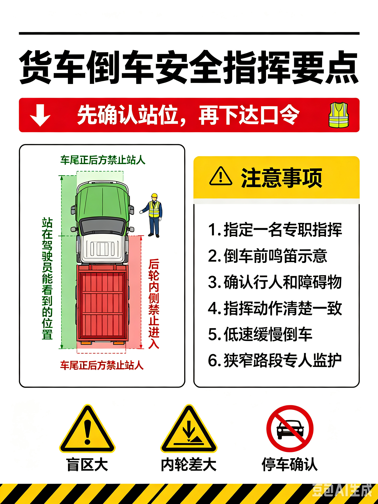

车辆（移动设备）
关键控制措施
以下为关键控制措施，如果您所在的区域在这些要求方面缺乏、或者不健全，则应立即停止作业：
-
移动设备本身：
- 叉车上安装了防碰撞系统（ADAS）
- 车辆有翻车保护装置
- 车辆有运动指示器（如倒车灯）、倒车警报、喇叭、蓝光灯和/或接近指示灯，且功能正常
-
司机：
- 准驾证件或资质必须与车型相符，厂内机动车辆（例如叉车、登高车）必须获得仓库主管及/或维修经理的授权
- 驾驶车辆必须限速行驶
- 始终使用安全带
-
作业人员或行人：
- 行人在与移动设备有交互的地方穿着高可见度服装（反光服）
- 任何人不得在车辆动线方向上停留或穿越
-
移动设备作业现场：
- 现场有保护行人、结构或建筑物的物理防护（如防撞柱等）
- 现场有使得行人无法靠近移动设备的作业区域的围阻设施
- 在移动设备工作区域为行人划定了“禁止靠近区”（禁止区的宽度不小于1.8米）
- 停止的车辆使用了轮挡和停车标识
- 现场至少有一种主动控制：司机从卡车上下来，操作员控制钥匙；使用尾勾或握手阀锁或马腿锁对车辆进行锁定
倒车指挥要点

返回首页